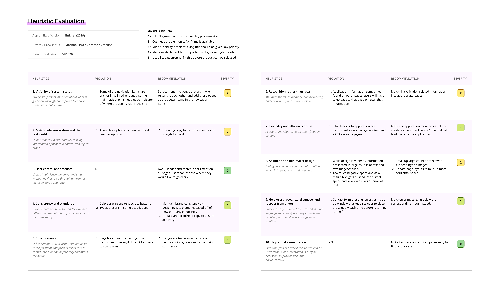

Since its formation in 1992, the Long Island High Tech Incubator has dedicated itself to supporting technologically innovative companies grow.
Scroll down to view more.
UX/UI Design, Wireframing, Competitive Analysis, Site Mapping, Behavioral Research, Heuristic Evaluation
July - Oct 2020

LIHTI aimed to launch a rebranding, which included a refresh of their current website. The organization also wanted to continue attracting new applicants and saw this rebranding as an opportunity to increase user engagement.
Update the site's design and content to align with the new brand guidelines to increase user interest and conversion.
We broke the research process into multiple components to throughly investigate areas of improvement for the site. These steps were determined after we discovered our primary pain points during the heuristic evaluation in the next section.
We first evaluated the current state of LIHTI's site using Jakob Nielsen's 10 usability heuristics. The purpose of this evaluation is to see if LIHTI's site follows best design practices. We evaluated the entire site by looking at each of site's pages. We scored the site according to how well it met or did not meet the expectations of each heuristic.
A consolidation of the evaluation results.
Our main takeaways from this study:
To find opportunities of improvement and identify successful design strategies used by LIHTI's competitors, I conducted competitive research on five startup incubators in similar industries: MassChallenge, 500 Startups, Y Combinator, MBC Biolabs, and StartX.
The first commonality I noticed was the variety of methods used to highlight the incubator's success.
These strategies effectively promoted the incubator's reputation postively and provided users a sense of trust.
The most reoccurring methods were:
500 Startups
MassChallenge
Large statistic displays
MBC Biolabs
MassChallenge
Spotlight news articles
Y Combinator
Start X
Listing well-known companies
Y Combinator
500 Startups
Testimonials
I also noticed that the competitor sites added an “Apply” button within the header. The placement of this call to action was important because it made it easier and faster for users to find the application.


Stand out CTAs
(from each column of images, top to bottom: 500 Startups, MBC Biolabs, Y Combinator, MassChallenge)
The incubators also made sure that their mission statements were clear to their audience. This effectively communicates the goals and purpose of each incubator.

Clear and bold mission statements
(from each column of images, top to bottom: 500 Startups, MBC Biolabs, Y Combinator, MassChallenge)
Another pattern I observed was that the incubators listed all their companies on a single page, with options for the user to filter and search for specific companies. This was important because this presented users with the freedom to filter through information, rather than presenting a long list that could lead to endless scrolling and a decrease in findability.
Company directories with filter options
(from each column of images, top to bottom: MassChallenge, Y Combinator, MBC Biolabs)
To design a better navigation structure for the site, we conducted a virtual open card sort. We presented users with a list of the pages present on the site and asked them to sort them into categories that seemed intuitive to them.
This purpose of this method was to help us understand what categories feel natural to users and how they expect information to be presented to them.

Virtual Open Card Sort

Virtual Closed Card Sort
Next, we conducted a virtual closed card sort. This time, we presented users with set categories that we derived from the previous test.
We asked them to sort the same list of pages also from the previous test into these set categories.
With this method, we were able to test the effectiveness of the proposed navigation based on the previous test.
From the card sorting experiments, we were able to understand how users expected the site's content to be presented. Thus, we were able to determine which pages to consolidate and which content could be sorted into different pages.
Main Changes:
After consolidating our research and tests, we were finally able to defined the core functionalities and layout of the website. I presented the solutions we determined with low-fidelity wireframes. Using the wireframes, we were able to gather crucial feedback to better inform the decisions we will make in each iteration of the design.
I designed both the desktop and mobile layouts. I also used these wireframes to create a prototype to test the new navigation amongst our team.
After finalizing the functionality and layout of the site, I completed the designs by implementing LIHTI's new branding system and content. I also designed all the UI elements and icons.
In order to hook in our audience and convince them to apply to LIHTI's program, we needed to quickly and effectively communicate LIHTI's mission and values. Taking inspiration from our competitors, I kept LIHTI's existing hero banner, but added success highlights and made their CTAs stand out more by using the new design system.
Move mouse into the box below to scroll through the design

After finalizing the new site map, I designed the new pages. I improved the layout of these pages by breaking up large sections of text with more visual content and using clear headings to create sub-sections for users to quickly scan the information.


I designed new layouts for the consolidated Companies and Resources pages. I grouped relevant information together for easy navigation within the Resources page.
Move mouse into the box below to scroll through the design
For the Companies page, I added filtering options. Previously, the companies were simply listed out, thus, creating pages with endless scrolling. Adding the ability to filter allows users to find exactly the information they need quickly.
To ensure compatiability across devices, I created designs for mobile screens by adjusting the layout of each page for smaller screens and designing a mobile menu.
Move mouse into each of the boxes below to scroll through the designs
Home Page

About Page
Apply Page
At LIHTI, I learned a lot of different research methods and understanding the purpose they each had. I also got to be involved in an entire end-to-end process, ranging from the research to design. The iterative process really taught me to think more deeply about my solutions and consistently improve upon them.